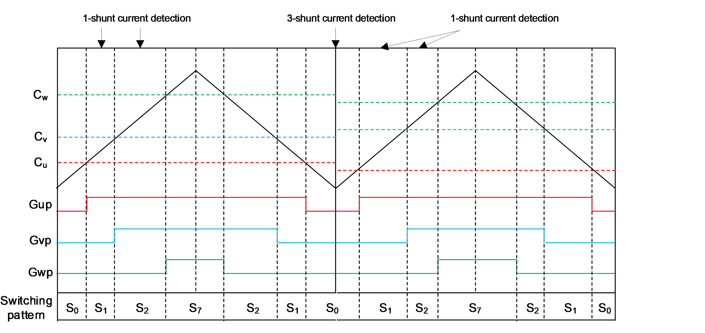
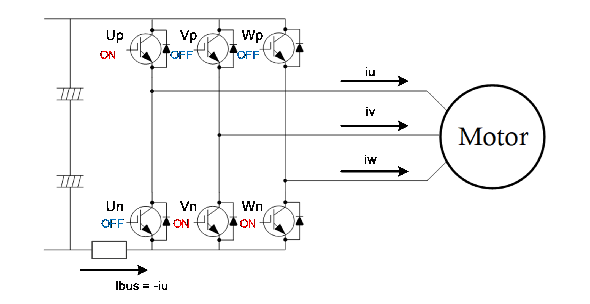
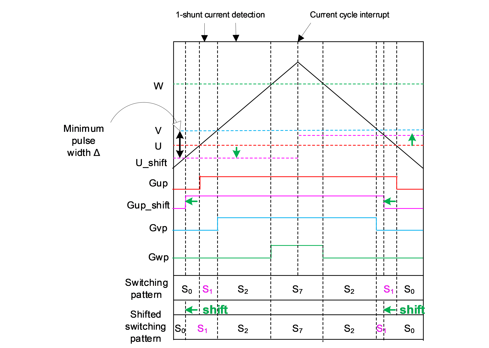
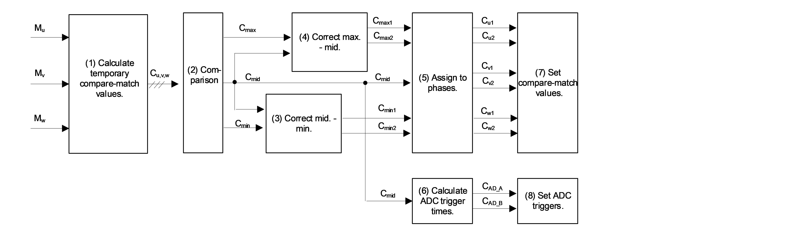
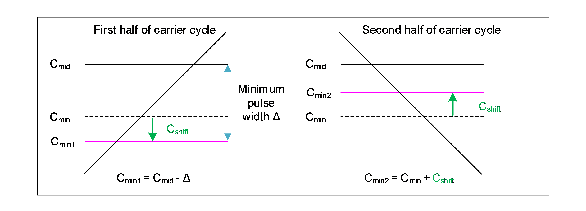
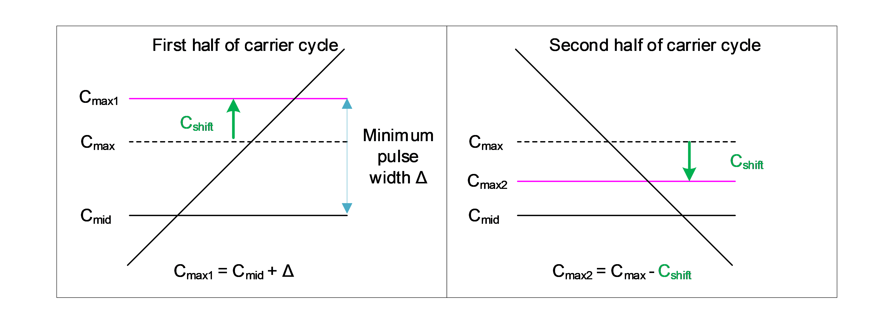
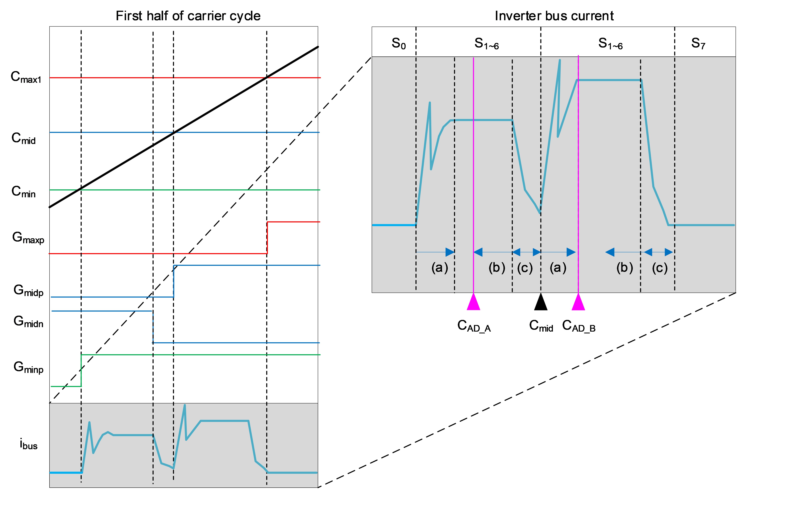

There are two current detection methods for vector control: the in-line method, which uses current transformers (CT) or ΔΣ modulators to detect three-phase output currents, and the low-side method, which places shunt resistors at the lower arms of the inverter to detect currents. The major method used in home appliances is that using shunt resistors with the aim of simplified, low-cost, and small circuits. In some cases, the 1-shunt current detection method is used, in which only one shunt resistor is used to detect the phase of the current flowing through the inverter bus according to the PWM signal pattern and three phase currents are reconstructed from the detected inverter bus current. This section describes the algorithm of the 1-shunt current detection method implemented by this sample program.
Motor-driving systems controlled by MCUs generally use the carrier
comparison method in applying phase voltage command values, which are
results of vector control calculation, to motors. This method generates
gate signals for the upper and lower arms corresponding to the
individual phases of the inverter according to the relationship between
the carrier wave (usually a triangle-wave) output from a timer that is
provided as a peripheral module in the MCU and the compare-match values
calculated from the phase voltage command values. The power elements in
the inverter are switched by these gate signals and PWM waveforms are
applied to the motor.
Figure 1 shows the changes in the gate signals
for the individual phases and the timing of current detection with the
carrier comparison method. In this figure, \(C_u\), \(C_v\), and \(C_w\) indicate the compare-match values for
the respective phases, \(G_{up}\),
\(G_{vp}\), and \(G_{wp}\) indicate the gate signals for the
upper arms for the respective phases, and \(S_0\) to \(S_7\) indicate the patterns for switching
the elements (voltage vectors). For the lower arms, the logical inverses
of \(G_{up}\), \(G_{vp}\), and \(G_{wp}\) are applied as gate signals with
the dead time taken into account. Table 1 lists the switching patterns.
Desired voltages are output to the motor according to the switching
patterns and the durations of the individual patterns in each carrier
cycle. Figure 3 shows an example of the output of phase voltage command
values according to the patterns \(S_0\), \(S_1\), \(S_2\), and \(S_7\) and the durations in the individual
patterns. The switching patterns and their durations depend on the
relationship between the voltage command values for the individual
phases. With the 3-shunt current detection method (low-side method),
currents are detected in the \(S_0\)
period in which the lower arms of the three phases are all turned on
(\(G_{up}\), \(G_{vp}\), and \(G_{wp}\) are not applied) as shown in
Figure 1 because shunt resistors are placed under the legs of the
individual phases in the inverter. With the 1-shunt current detection
method on the other hand, currents cannot be detected in the \(S_0\) and \(S_7\) periods in which the upper arms or
lower arms of the three phases are all turned on (hereafter referred to
as the zero voltage vectors) because no current flows through the
inverter bus. Therefore, with the 1-shunt current detection method,
currents are detected in the \(S_1\) to
\(S_6\) periods (hereafter referred to
as the non-zero voltage vectors) in which a current flows through the
inverter bus. Figure 2 shows the inverter bus current flowing in the
\(S_1\) period. In this period, only
the U-phase upper arm is turned on, so the U-phase current can be
obtained by detecting the inverter bus current. The last row in Table 1
shows the phase current that can be obtained by detecting the inverter
bus current in the respective parts of the switching patterns. When
there are two different non-zero voltage vectors (two among \(S_1\) to \(S_6\)) within one carrier cycle, currents
of two phases should be detected at appropriate times and the remaining
one phase current can be obtained from the Kirchhoff's current law.
Table 1 Inverter Switching Patterns and Phase Currents Detected from
the Inverter Bus Current
(1 = On and 0 = Off, Only Shown for the Upper Arms) | Pattern | \(S_0\) | \(S_1\) | \(S_2\) | \(S_3\) | \(S_4\) | \(S_5\) | \(S_6\) | \(S_7\) | |——-|—|—|—|—|—|—|—|—| | U+ | 0 | 1
| 1 | 0 | 0 | 0 | 1 | 1 | | V+ | 0 | 0 | 1 | 1 | 1 | 0 | 0 | 1 | | W+ |
0 | 0 | 0 | 0 | 1 | 1 | 1 | 1 | | \(i_{bus}\) | – | \(-i_u\) | \(i_w\) | \(-i_v\) | \(i_u\) | \(-i_w\) | \(i_v\) | – |


With the 1-shunt current detection method, currents are detected in periods of two different non-zero voltage vectors (\(S_1\) to \(S_6\)) within a carrier cycle. Therefore, the period of each non-zero voltage vector has to continue for a sufficient time to allow complete A/D conversion of the current; that is, this method has a fundamental problem in that currents are not correctly detected if securing sufficient periods of non-zero voltage vectors is not possible. Such situations of periods of non-zero voltage vectors being insufficient occur when the voltage command (compare-match) values for two phases are too close to each other. To avoid such situations, this sample program uses the pulse-shift control that is generally applied with the 1-shunt current detection method.
This method of control involves correcting the differences between the 3-phase compare-match values calculated from the voltage command values in the first half of a carrier cycle (during counting up) so that non-zero vector periods are extended and sufficient time for A/D conversion is secured. In the second half of the carrier cycle (during counting down), the compare-match values are corrected again to compensate for the correction applied in the first half of the cycle. Thus, the timing of A/D conversion can be secured while the desired voltage command values (voltage vectors) are being output. The difference between the compare-match values for two phases that is required to secure sufficient time for A/D conversion is called the minimum pulse width, Δ, and defined as follows in this document.
\[ \Delta = \bigl(\text{current rise time} + \text{ringing time}\bigr) + \bigl(\text{A/D conversion delay} + \text{sampling time}\bigr) + \text{dead time} \]
Figure 3 shows an example of correcting a compare-match value with the pulse-shift control method. Before pulse-shift control is applied (gate signals \(G_{up}\), \(G_{vp}\), and \(G_{wp}\)), the difference between the U and V compare-match values is smaller than the minimum pulse width Δ. The non-zero voltage vector period \(S_1\) shown in the figure is small and the current cannot be correctly detected. Therefore, the compare-match value is corrected in the first half of the carrier cycle so that the difference between U and V is corrected to be equal to the minimum pulse width Δ and the \(S_1\) period is extended (the resultant gate signals are \(G_{up}\), \(G_{vp}\), and \(G_{wp}\)). This satisfies the condition for the minimum pulse width Δ, so the current can be correctly detected in the \(S_1\) period. In the second half of the carrier cycle, the gate signals are generated with the compare-match value being corrected again to compensate for the correction applied in the first half so that the average voltage is kept at a desired value.

This section describes the procedures for 1-shunt current detection with pulse-shift control that is implemented in the sample software. The procedures are divided into pulse-shift control, which involves calculating the A/D conversion trigger times and corrected compare-match values, and the reconfiguration of phase currents, which involves reconstructing the phase currents from the inverter bus current.
Figure 4 shows the procedure for pulse-shift control that is implemented in this sample software. The compare-match values for the individual phases are compared. The phase of the largest value is referred to as the maximum phase, that of the middle value the middle phase, and that of the smallest value the minimum phase.

The compare-match values to be used with the carrier comparison method are calculated from the duty cycles (\(M_u\), \(M_v\), and \(M_w\)), which are the results of current-control calculation, by using the following equation.
\[ C_{u,v,w} = C_{peak} \times \left( 1.0 - M_{u,v,w} \right) + 0.5 \times \left(C_{dead} \right) \]
\(C_{u,v,w}\): Compare-match values
for the individual phases,
\(C_{peak}\): Peak value of counting in
a triangle-wave,
\(C_{dead}\): Value to count for dead
time
The calculated compare-match values for the individual phases are compared and the maximum, middle, and minimum phases are determined.
The pulse width (difference in compare-match values) between the minimum and middle phases is obtained. If the width is smaller than the minimum pulse width, correction is applied to the minimum phase. \(C_{min1}\) is the compare-match value corrected in the first half of the carrier cycle and \(C_{min2}\) is that in the second half of the cycle. Figure 5 shows the correction applied to the minimum phase. If the obtained width is not smaller than the minimum pulse width, that is, a sufficient voltage vector period for current detection is secured, \(C_{min}\) is assigned to \(C_{min1}\) and \(C_{min2}\).

The pulse width (difference in compare-match values) between the middle and maximum phases is obtained. If the width is smaller than the minimum pulse width, correction is applied to the maximum phase. \(C_{max1}\) is the compare-match value corrected in the first half of the carrier cycle and \(C_{max2}\) is that in the second half of the cycle. Figure 6 shows correction applied to the maximum phase. If the obtained width is not smaller than the minimum pulse width, that is, a sufficient voltage vector period for current detection is secured, \(C_{max}\) is assigned to \(C_{max1}\) and \(C_{max2}\).

Information on phases is required to specify compare-match values in the MCU. The U, V, and W phases are assigned to the corrected compare-match values for the maximum, middle, and minimum phases.
With the 1-shunt current detection method, A/D conversion is performed in the periods of two different non-zero voltage vectors in which phase currents can be detected. A request for starting A/D conversion can be generated by a compare match between the value of triangle-wave counting and an A/D conversion trigger value. Therefore, the times of A/D conversion triggers should be specified such that they are appropriate for detected currents. Note that the periods of each two different non-zero voltage vectors have been set so that their widths are no smaller than the minimum pulse width in the first half of the carrier cycle by the operations in steps (3) and (4).
An appropriate time at which currents can be detected is the state where operation is in a non-zero voltage vector period and the following conditions are satisfied.
The currents have risen and ringing in the signal has settled after switching.
The currents are stable after the start of A/D conversion until
and during sampling.
→ A/D conversion begins at least the length of the sampling time earlier
than the start of the dead time.
Operation is not in the dead-time period.
Figure 7 shows the behavior of the gate signals, inverter bus current, and A/D conversion with the carrier comparison method. In this maximum, middle, and minimum phases, \(G_{maxp}\), \(G_{midp}\), and \(G_{minp}\) are figure, \(C_{max}\), \(C_{mid}\), and \(C_{min}\) are the compare-match values for the upper arm, \(G_{midn}\) is the logical inverse of the \(G_{midp}\) signal with the dead time taken into account, and \(i_{bus}\) is the inverter bus current. the gate signals for the maximum, middle, and minimum phases in the carrier cycle and \(C_{AD\_B}\) is the next A/D conversion trigger, that is, \(C_{AD\_A}\) < \(C_{AD\_B}\). As the inverter bus current changes when the \(C_{AD\_A}\) is the first A/D conversion trigger in the first half of the switching pattern changes, appropriate A/D conversion trigger times that satisfy the above conditions (a) to (c) should be specified. Here, desirable because Kirchhoff's current law, which is used to calculate setting the two times for current detection close to each other is the third-phase current that cannot be directly detected, applies to the currents flowing at the same time. Therefore, A/D conversion triggers should be specified with reference to the middle phase as shown in Figure 7 so that two currents are detected at the closest possible times. The following shows the equations for calculating the times of A/D conversion as compare-match values. Note that the current rise time and ringing time depend on circuits and other conditions. Determine the value of \(C_{adjust}\) to secure sufficient time to wait for the current to rise and become stable after ringing. \(C_{adjust}\) can be modified through the DRIVER_CFG_AD_TRIGGER_DELAY_TIME macro, which defines the time for adjusting the delay until the start of A/D conversion (μs).
\[ \begin{aligned} C_{AD_A} &= C_{mid} - \left( C_{ADsample} + C_{dead} \right) \\ &= C_{mid} - \left( \Delta - C_{adjust} \right) \\ C_{AD_B} &= C_{mid} + C_{adjust} \end{aligned} \]
\(C_{AD\_ A,B}\): A/D conversion
start triggers, \(C_{mid}\): Value to
count for the middle phase,
\(C_{ADsample}\): Value of counting
corresponding to the A/D conversion sampling time
and the delay until the start of A/D conversion,
\(C_{adjust}\): Value of counting
corresponding to a sufficient time to wait for the current rise
time
and ringing time,
\(C_{dead}\): Value to count for dead
time

The compare-match values for the individual phases that are corrected for use in the first and second halves of the carrier cycle are specified in the registers of the MCU. Use a PWM timer among the peripheral functions of the MCU in which compare-match values can be updated in the first and second halves of a carrier cycle.
The values for the A/D conversion triggers are specified in registers of the MCU. Use an A/D converter and a PWM timer among the peripheral functions of the MCU in which two A/D conversion triggers can be specified and the results of the individual A/D conversions can separately be obtained.
With the 1-shunt current detection method, the phase currents are reconstructed from the obtained inverter bus currents. As this sample software detects a current during counting up for producing the first part of the triangle-wave, a current control interrupt is generated at each crest of the triangle-wave so that current detection and current control are done at the closest possible times. Therefore, the times of A/D conversion triggers calculated in response to the current control cycle interrupt become valid at the next trough of the triangle-wave. The phase currents can be calculated from the switching patterns and inverter bus currents based on the compare-match values obtained in response to the current control cycle interrupt in the previous carrier cycle. From reading Table 1, we can see that the phase currents in the minimum phase can be detected at the time of the match with \(C_{AD\_A}\) and those in the maximum phase can be detected at the time of the match with \(C_{AD\_B}\). Accordingly, this sample software reconstructs the phase currents from the information on the maximum and minimum phases obtained in response to the current control cycle interrupt in the previous carrier cycle.
\[ {i\left\lbrack ph_{\min} \right\rbrack = - i_{busA}}\\ {i\left\lbrack ph_{\max} \right\rbrack = i_{busB}}\]
\(i\lbrack \text{phase}\rbrack\):
Phase current (phase indicates the U, V, or W phase),
\({ph}_{\min}\): Minimum phase, \({ph}_{\max}\): Maximum phase
\(i_{busA}\): Inverter bus current
detected in response to A/D conversion trigger A
\(i_{busB}\): Inverter bus current
detected in response to A/D conversion trigger B
With the 1-shunt current detection method, the timing of conversion by the A/D converter requires control according to the compare-match values calculated from the duty cycles for the individual phases. This control is implemented in the sample program through the use of the following peripheral function.
| MCU | Peripheral Function | Implementation |
|---|---|---|
| RA6T2 | GPT | This handles the A/D conversion start request function in response to matches in comparison between the GTADTRA or GTADTRB register and the GTCNT counter in the GPT module. |
| RX26T | GPT | This handles the A/D conversion start request function in response to matches in comparison between the GTADTRA or GTADTRB register and the GTCNT counter in the GPT module. |
With the 1-shunt current detection method, a single A/D converter is used to obtain A/D conversion results with two times. This control is implemented in the sample program through the use of the following peripheral functions.
| MCU | Peripheral Function | Implementation |
|---|---|---|
| RA6T2 | ADC | The FIFO function is used. The FIFO works as a ring buffer and stores multiple results of A/D conversion. |
| RX26T | S12ADHa | The extended double-trigger mode is used. In this mode, the result of the first A/D conversion through the selected channel is s stored in the ADDBLDRA and ADDBLDRB registers. |
With the 1-shunt current detection method, compare-match values are corrected in the first and second halves of a carrier cycle. This control is implemented in the sample program through the use of the following peripheral function.
| MCU | Peripheral Function | Implementation |
|---|---|---|
| RA6T2 | GPT | Triangle-wave PWM mode 3 in the GPT module is used. In this mode,
the values of the GTCCRA and GTCCRB registers can be updated from
temporary registers at the crests or troughs of a triangle-wave. * The values output from pins change in response to matches in comparison between the GTCCRA or GTCCRB register and the GTCNT register. |
| RX26T | GPT | Triangle-wave PWM mode 3 in the GPT module is used. In this mode,
the values of the GTCCRA and GTCCRB registers can be updated from
temporary registers at the crests or troughs of a triangle-wave. * The values output from pins change in response to matches in comparison between the GTCCRA or GTCCRB register and the GTCNT register. |